A morph is a simultaneous warp of the image shape and a cross-dissolve of the image colors. The warp is controlled by defining a correspondence between the two pictures, for example by mapping eyes to eyes, mouth to mouth, chin to chin, ears to ears, etc. In this project, we explored morphing by producing a "morph" animation from one face into another, computing the mean of a population of faces and extrapolating from a population mean to create a caricature of yourself.
First, I rotated and cropped the images to make them match as much as possible for better visual results in later parts. I used the labeling tool on the course website to select the correspondences between the two images. I used scipy.spatial.Delaunay to find the Delaunay triangulations of the two faces and plotted them using plt.triplot(pts[:, 0], pts[:, 1], tri.simplices), where tri is the triangulation.
|
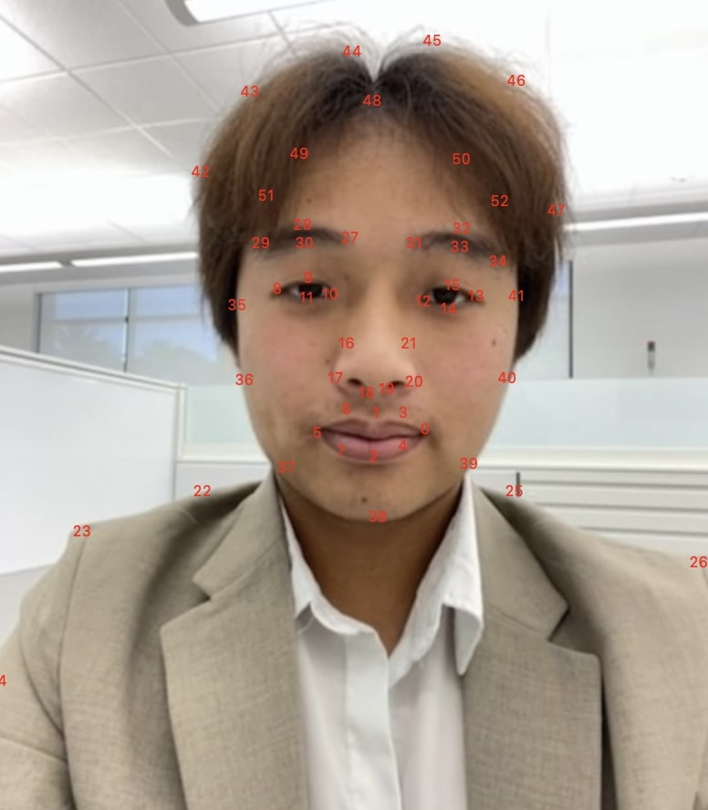
Alan Facial Keypoints
|
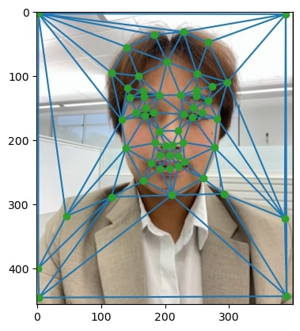
Alan Triangulation
|
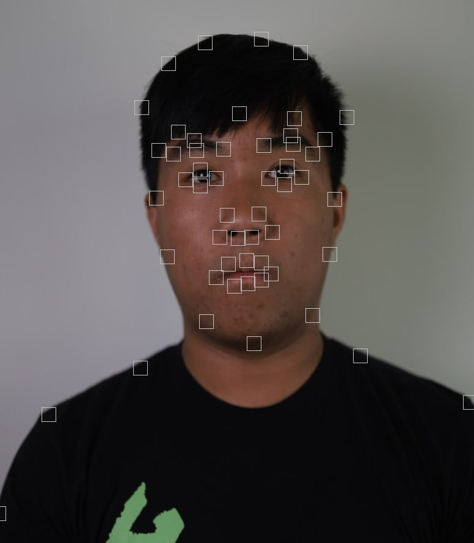
Jacob Facial Keypoints
|
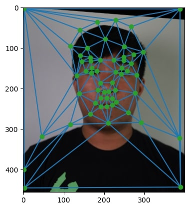
Jacob Triangulation
|
yup.
|
Alan
|
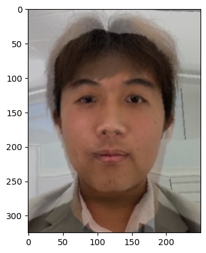
Jalan Morph (Midway)
|
Jacob
|
Modifying my code from the previous part, I wrote a morph function that uses warp_frac to control the intermediate shape configuration and dissolve_frac to cross-dissolve. I morphed the faces over 45 times while incrementing the warp_frac and dissolve_frac parameters from 0 to 1. Finally, I took the resulting images and merged them into a GIF using an online GIF creator.
I used the non-smiling/mug faces from the FEI Face Database for this part. I parsed the .pts files with a helper function using np.loadtxt to get the corresponding points of every image. I then averaged all of the corresponding points and found its triangulation to get the average points and triangulation of the population. I used my morph function to morph every face with the average face shape of the population (some examples showed below). I then cross dissolved all of these morphs to create the average face of the population. Finally, I morphed my face into the average face shape of the population, and vice versa.
| 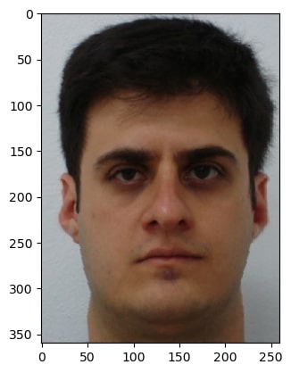 | 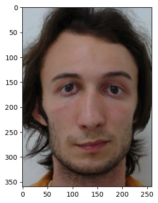 | 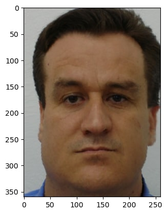 |
| 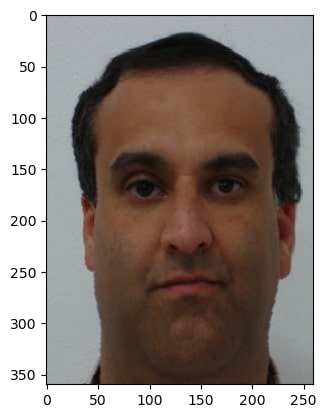 | 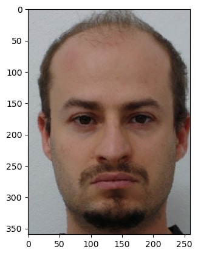 | 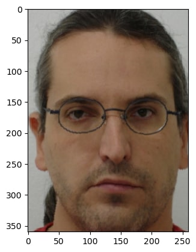 |
|
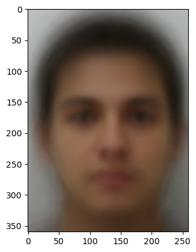
Population Average Face
|
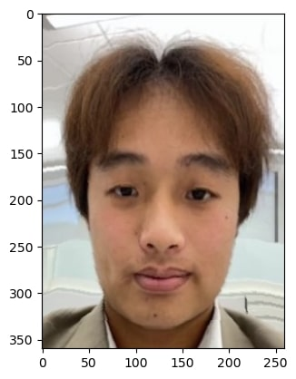
Warping Alan to Average Face
|
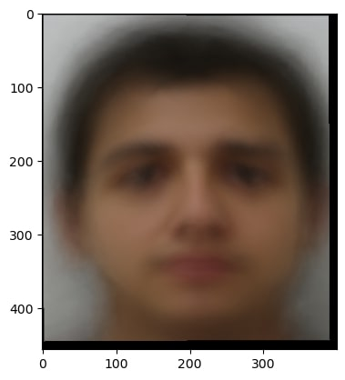
Warping Average Face to Alan
|
I used the formula alpha * mean_image + (1 - alpha) * self_image to extrapolate from the population mean to create a caricature of myself.
yup. Average Image source link.
|
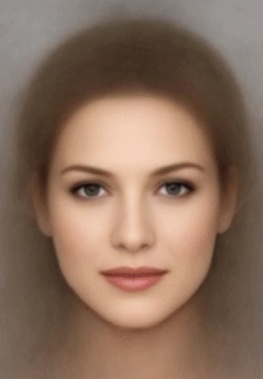
Average White Female
|
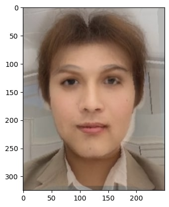
Alana
|
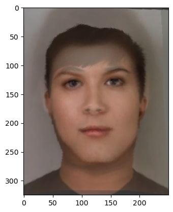
Jackie
|